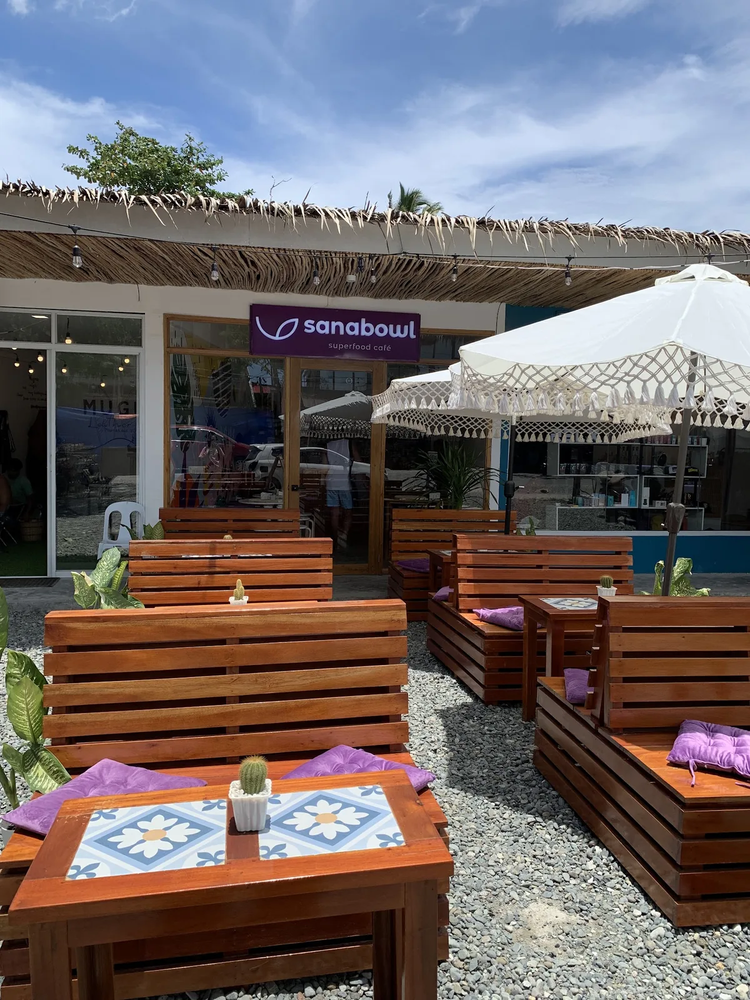
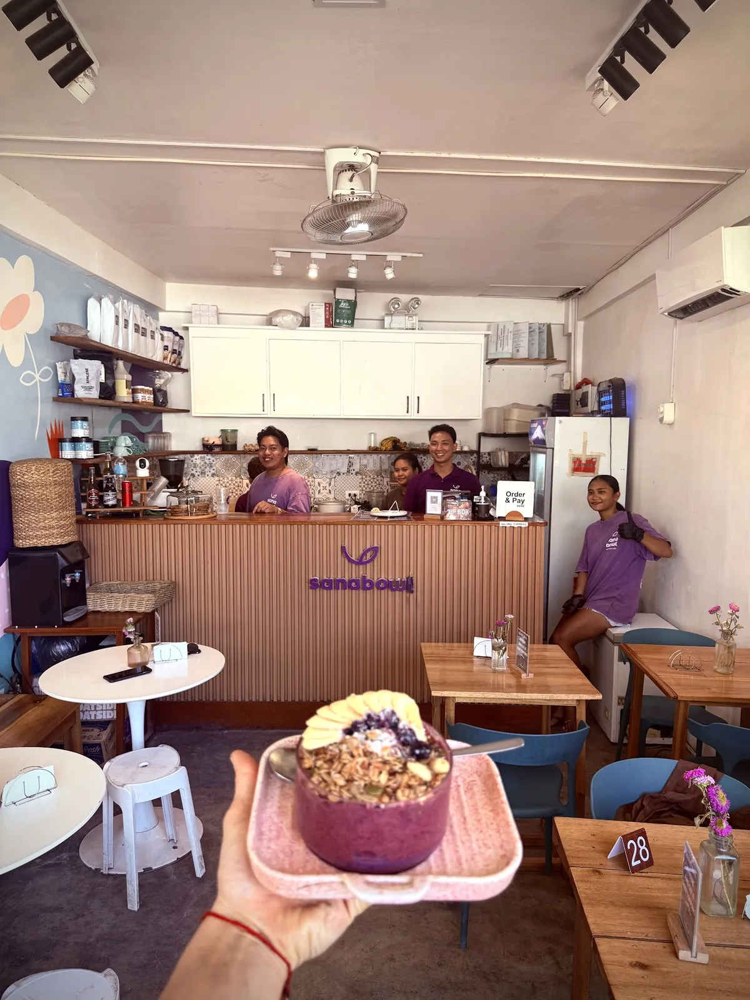
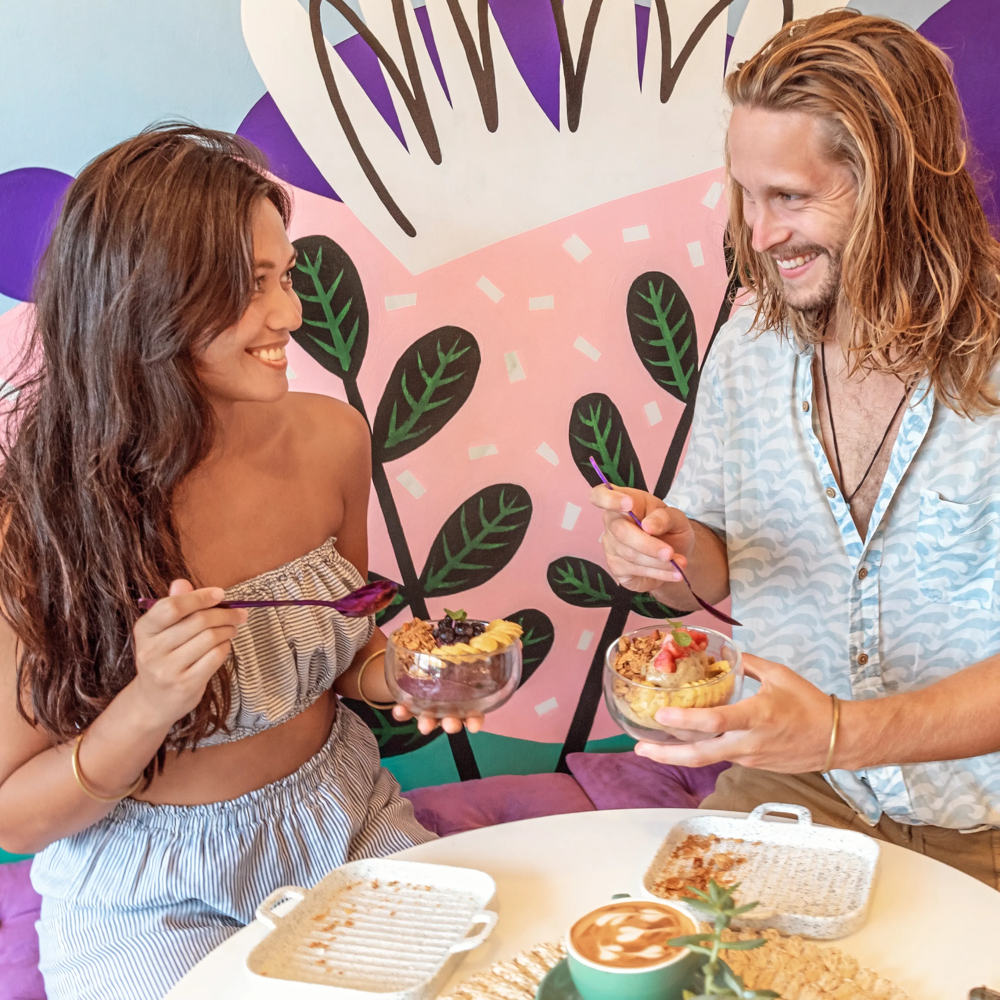
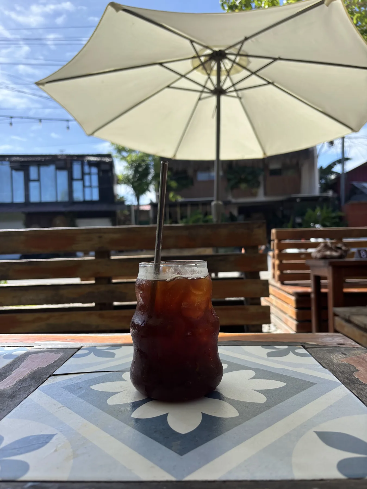
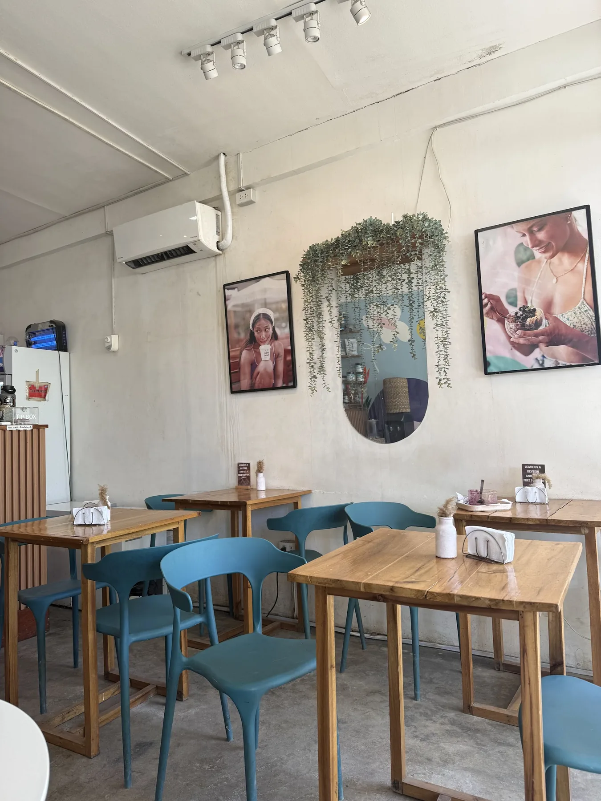
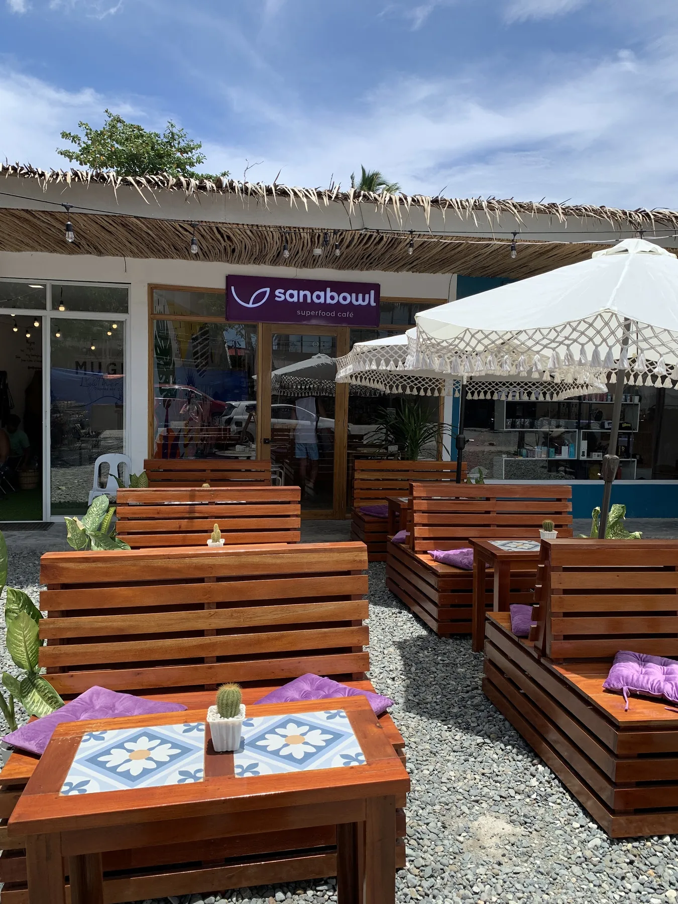

Visit
tourism road · general luna
SanaBowl is on Tourism Road, Purok 5, in General Luna. Open every day from 7 am to 11 pm, for dine in, take away or delivery.

Open every day
- Monday7 am – 11 pm
- Tuesday7 am – 11 pm
- Wednesday7 am – 11 pm
- Thursday7 am – 11 pm
- Friday7 am – 11 pm
- Saturday7 am – 11 pm
- Sunday7 am – 11 pm
- Address
- Tourism Rd, Purok 5, General Luna, 8419 Surigao del Norte, Philippines
- Plus Code
- Q5P6+9G General Luna
- Phone
- +63 960 221 3852
- @sanabowl.siargao
Terrace and mural
Wooden benches with purple cushions under the thatched roof outside, the painted wall inside. A women-owned café.



